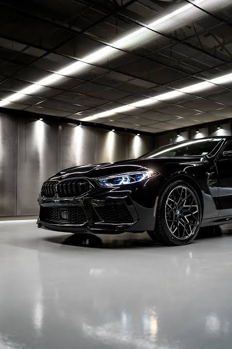
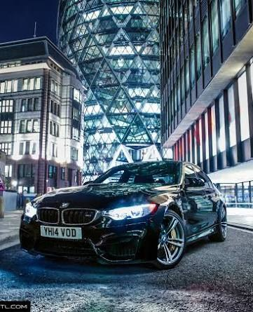
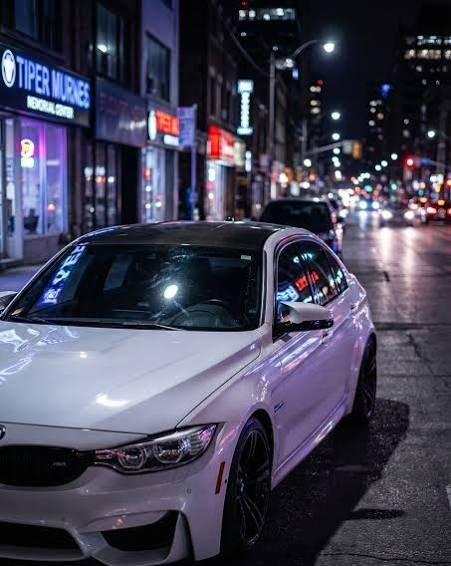

Esta página tiene video y sonido. Toca el botón para entrar.
Desde 1972, la división de competición de BMW convierte pistas, rallies y carreras de resistencia en ingeniería que después llega a la calle.
Ver la historiaElige una etapa para ver qué pasó.
Algunos de los más conocidos de la marca en competición.
El “Batmobile”: alerones enormes y victorias en el campeonato europeo de turismos.
El primer deportivo de producción de BMW Motorsport, con su propia serie de carreras, la Procar.
Nació para homologar un coche de competición y se volvió leyenda en turismos.
Prototipo que ganó las 24 Horas de Le Mans.
Coche de clientes para campeonatos GT de todo el mundo.
Prototipo híbrido de la era actual, en IMSA y en el Mundial de Resistencia.
Tres BMW M en la ciudad.


